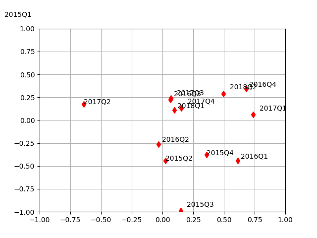

Hedgeye kuruluşunun CEO’su Keith Mccollough (KM) başlangıç olarak iki değişkene bakarak genel olarak hangi varlıklara, ne zaman yatırım yapılması gerektiğine karar verebilmekte. Bu iki değişken enflasyon ve ekonomik büyümedir. Fakat önemli bir nokta KM bu değişkenlerin ikinci türevine bakıyor, yani değişimin değişimine, ya da değişim hızına (rate of change). Fizikle alakalandırmak gerekirse enflasyonun “ivmesinden’’ ya da”frenlemesinden (ters ivme)’’ bahsediyor mesela ki ivme ikinci türevdir (mesafenin zamana göre türevi hız, onun türevi ivme). Niye ikinci türev? Çünkü KM tarihi veriye bakarak bulmuştur ki enflasyon ve büyümenin değişim hızı senetlerin, o dönemdeki tahvillerin, senetlerin getirisi ile çok yakından bağlantılıdır.
Değişimin değişimini KM şu şekilde hesaplıyor: ilk türev yıl-üzeri-yıl (year-over-year, YoY) üzerinden yani, mesela, bir çeyrek için büyüme yüzdesi hesaplanacaksa bu aynı senedeki bir önceki çeyreğe değil, 1 sene önceki aynı çeyreğe bakılarak yapılıyor. Böylece elmaları elmalar ile karşılaştırmış oluruz, mevsimsel farklılıklar hakkında endiselenmek gerekmez. Eğer 2010 senesindeki 4. çeyrek, 3. çeyrekten büyük ise, belki bu büyüklük kış sezonunda bazı eylemlerin hep daha fazla olmasindan ileri geliyordur, yani büyüme “gerçek’’ değil sezonsaldır. Ama 2010 4. çeyreği 2009 4. çeyreği ile karşılaştırırsak bu mevsimsel farklılıkları hesaba almamış oluruz. Bu birinci türev. Bu zaman serisi hesaplandıktan sonra ikinci ikinci fark / türev hesabı bir önceki öğeye bakarak klasik şekilde yapılabilir.
Enflasyon aynı şekilde, YoY, sonra klasik fark.
Genel olarak düşünmek gerekirse KM makro değişkenlerini, ekonomiyi çevrimsel / dönemsel (cycliç) olarak görüyor, aynen bir yılın mevsimleri olduğu gibi. İnen bir süre sonra aşağı inmek zorundadır, düşen bir süre sonra yukarı çıkmak zorundadır. Bu bir çember görüntüsü kafamızda oluşturabilir, ya da zaman indisini de hesaba katarsak sağa doğru açılmış bir çember, yani bir sinüs eğrisinden bahsediyoruz. Her değişken KM’e göre bir sinüs eğrisinde hareket etmektedir; enflasyon ve büyüme sinüs eğrilerinin de tabii kendine has parametreleri olabilir, bazıları daha geniştir belki bazıları daha dardır, genliği kimisinin daha yüksektir. Farklı ülkelerin büyümeleri de farklı eğrilerde olacaktır. Ama KM tüm değişkenleri sinüste farzeder. O zaman metodun yaptığı bir değişkenin ikinci türevine bakarak sinüs eğrisinin neresinde olduğunu anlamaya uğraşmaktır. Bu anlayışın getirdiği ilk rapor altta.
ABD verisi üzerinde uygulayalım,
import pandas as pd
df1 = pd.read_csv('quandl-gdp.csv',index_col=0,parse_dates=True)
df2 = pd.read_csv('quandl-inf.csv',index_col=0,parse_dates=True)
df1['gdpyoy'] = (df1.Value - df1.Value.shift(4)) / df1.Value.shift(4) * 100.0
def f(x):
if x.name.month == 4: return "%d%s" % (x.name.year,"Q1")
elif x.name.month == 7: return "%d%s" % (x.name.year, "Q2")
elif x.name.month == 10: return "%d%s" % (x.name.year, "Q3")
elif x.name.month == 1: return "%d%s" % (x.name.year-1, "Q4")
df1['Q'] = df1.apply(f, axis=1)
print (df1[['gdpyoy','Q']].tail(3))
df2['cpi'] = df2.resample('Q')[['Value']].mean()
df2c = df2.dropna()
def f(x):
if x.name.month == 3: return "%d%s" % (x.name.year,"Q1")
elif x.name.month == 6: return "%d%s" % (x.name.year, "Q2")
elif x.name.month == 9: return "%d%s" % (x.name.year, "Q3")
elif x.name.month == 12: return "%d%s" % (x.name.year, "Q4")
df2c['Q'] = df2c.apply(f, axis=1)
print (df2c[['cpi','Q']].tail(3))
print (df2c.tail(3)) gdpyoy Q
Date
2018-01-01 2.580414 2017Q4
2018-04-01 2.869807 2018Q1
2018-07-01 3.039632 2018Q2
cpi Q
Date
2018-03-31 2.214333 2018Q1
2018-06-30 2.712000 2018Q2
2018-09-30 2.642000 2018Q3
Value ... Q
Date ...
2018-03-31 2.360 ... 2018Q1
2018-06-30 2.872 ... 2018Q2
2018-09-30 2.277 ... 2018Q3
[3 rows x 3 columns]df = df1[['gdpyoy','Q']].merge(df2c[['cpi','Q']], on='Q')
df['gdpyoy'] = df.gdpyoy.shift(1)
df['gdpdiff'] = df.gdpyoy.diff()
df['cpidiff'] = df.cpi.diff()
df = df.dropna()Değişim hızını üstteki şekilde elde edince şimdi çok önemli bir raporu ortaya çıkarmak mümkün. İki değişken +, -, yani ivmeleneme, frenleme üzerinden 4 farklı şekilde kombine edilebilir; hem büyümede hem enflasyonda ivme vardır, ya da büyümede ivme enflasyonda fren vardır, vs. bu dört kombinasyonu Quad (Bölge) 1, Quad 2, Quad 3, .. diye ayrılır. KM her quad’ın kendine has özellikleri, yatırım usulleri olduğunu söyler (çünkü geçmise dönük analizi ona bu fikri vermiştir).
import random
plt.xlim(-1.0,1.0)
plt.ylim(-1.0,1.0)
plt.grid()
res = df[['Q','cpidiff','gdpdiff']].tail(14)
for (q,x,y) in np.array(res):
plt.plot(x,y,'rd')
xa = random.choice(np.linspace(0,0.05,3))
plt.text(x+xa,y+xa,q)
plt.savefig('tser_macromkt_03.png') 
Geçmişe dönük Quad’ların nerede olduğunu görüyoruz. Quad 1 iyi, Quad 2 çok iyi. Her iki durumda da büyüme yukarı çıkıyor. Quad 2’de büyüme ve enflasyon aynı anda yukarı çıkıyor. Bu bölgede herşey kazanıyor, tek istisnalar altın, tahviller ve dolar. Kıyasla Quad 4’te büyüme ve enflasyon aynı anda aşağı iniyor, burada dolar, aşağı beta defansif hisseler, günlük ihtiyaçlara hitap eden şirketler (enerji, alışveriş, vs), tahviller. Satılacaklar momentum, büyüme, ve Google, Microsoft gibi teknoloji şirketleri.
Not: Beta bir senetin tüm borsaya nazaran oynaklığıyla alakalı, borsadaki tüm senetler üzerinden hesaplanan oynaklık sayısı 1 kabul edilir, bunun altında (kat bağlamında) olan her diğer senet oynaklığı bu beta biriminden raporlanır. Mesela bir senetin oynaklığı borsa oynaklığının iki katıysa ona “2 beta’’ senedi denir, yarısıysa”0.5 beta’’.
Quad 3 stagflasyon. Bu noktaya çoğunlukla Quad 4’te olduğunu farkeden merkez bankaları yüzünden gelinir. Merkez bankacı panikleyerek kuru devalue eder, değerini indirir, ve “varlık fiyatı enflasyonu’’ yaratırlar, senetlerde, emlak piyasasında mesela. Çinliler bunu 2018’de yaptılar, Quad 4’teydiler, yuan’ı yüzde 4 devalüe ettiler, ve varlıklarda enflasyon pompalayarak”büyüme hayali’’ yarattılar, ama sonucunda ekonomik stagflasyona mahkum oldular.
Quad 2 ile Quad 4 birbirinin neredeyse tam zıttı. Birinde iyi olan diğerinde kötü, ve diğer şekilde.
Enflasyon ve büyüme bu kadar önemli kararları etkilediği için onları tahmin edebilen makro geleceği tahmin eder, ve Hedgeye şirketi bu ise müthiş odaklıdır. Aslında kabaca düşününce bu tahminin imkansız olmayacağı anlaşılır, eğer sinüs eğrisinin neresinde olacağımızı tahmin etmeye uğraşıyorsak, bunu nerede olduğumüza, nereden geldiğimize bakarak yapabilmemiz gerekir. HE hakikaten YoY verisinden geriye bakarak ortalamaya dönüş zamanını, işaret değişimini tahmin edebiliyor. Tam değişim hızı tahmini için 30 tane makro faktörü kullanarak bir başka regresyon yapıyorlar [10].
İma Edilen Oynaklık (İmplied Volatility)
HE sistemi Quad’lara ek olarak gerçek / tarihi ve ima edilen oynaklık [5,6,7] arasındaki ilişkiye bakarak ta işlem yapıyor. İma edilen oynaklık gelecekteki oynaklıktır. Fakat gelecekteki oynaklığı nasıl tahmin edeceğiz?
Belki başkalarının yaptığı tahmini kullanarak kendi tahminimizi oluştururuz. Ekler bölümünde opsiyonları anlattık; \(\sigma\) tahmininin Black-Scholes formülüne dışarıdan verilerek opsiyon fiyatlaması yapıldığını biliyoruz. Biz bu sistematiği tersine çevirerek başkalarının hesapladığı / verdiği / yayınladığı opsiyon fiyatlarından geriye giderek ima edilen oynaklığı elde edecegiz.
B-S formülünün kendisinin türetilmesine burada girmeyeceğiz, onu sadece şu şekilde gösterelim,
\[ V = BS(S,K,r,T,\sigma) \]
ki \(S\) o andaki senet fiyatı, \(K\) kullanım (strike) fıyatı, \(r\) risksiz faiz oranı, \(T\) ise opsiyonun bitişine kadar geçecek zaman. Dikkat edersek \(\sigma\) haricindeki tüm parametreler biliniyor.
Bir örnek üzerinde görelim, piyasada mevcut opsiyonlara baktığımızda GOOG (Google) için 18 Ekim 2014’te biten bir opsiyon görüyoruz, kullanım fiyatı $585, teklif fiyatı $17.50. Yani \(V,K,T\) elimizde. Bugünkü (opsiyon bitişinden kabaca bir ay önce, 9 Eylül) senet fiyatlarına bakıyoruz, GOOG $586.08 seviyesinde, bu da \(S\). Risksiz faiz \(r\) için 4 haftalık tahvil faizlerine bakabiliriz, ki o da şu anda %0.02 seviyesinde. Bu verilerle
\[ V = BS(S,K,r,T,\sigma) \]
\[ 17.50 = BS(586.08, 585.00, 0.0002, 0.10958.., \sigma)\]
Şimdi elimizde tek bilinmeyen \(\sigma\). Fiyatlandırmayı yapan kuruluşlar tabii ki oraya bir değer girerek 17.50 fiyatını bulmuşlar, biz \(\sigma\) harici bilinen tüm parametreleri kullanıp tek bilinmeyen \(\sigma\)’yi bulmaya uğraşacağız [8].
Ne yazık ki B-S denklemini cebirsel olarak tekrar düzenleyip \(\sigma\)’yı eşitliğin bir tarafında tek başına bırakmak analitik olarak mümkün değil. Ama sayısal kök bulma yöntemlerini kullanabiliriz. Bu yöntemlerden Newton’un yöntemini [11] yazısında gördük. Bir \(f(x)\) için \(f(x)=0\) sonucunu verecek \(x\) değerlerini bulmak kök bulmaktır. Tabii üstteki problemde sıfıra değil, belli bir sabit değere olan eşitlik var, \(f(x) = a\) gibi, ama bu önemli değil, bu problemi sıfıra eşitliği baz alan kök bulmaya çevirebiliriz, \(g(x) = a-f(x) = 0\) ile mesela. Ardından Newton yöntemini yine olduğu gibi, \(g\) üzerinde kullanırız,
\[ x_{n+1} = x_n - \frac{g(x_n)}{g'(x_n)} \]
ya da
\[ x_{n+1} = x_n - \frac{a-f(x_n)}{f'(x_n)} \]
Peki türev \(g'(x)\) nereden geliyor? B-S türetimini bilenler oynaklığa göre \(g(x)\)’nin türevinin “vega fonksiyonu’’ olduğunu bilirler. Bu fonksiyon B-S matematiği içinde bilinen, standart bir fonksiyon.
from scipy.stats import norm
import datetime, numpy as np
def find_vol(target_value, call_put, S, K, T, r):
MAX_ITERATIONS = 100
PRECISION = 1.0e-5
sigma = 0.5
for i in range(0, MAX_ITERATIONS):
price = bs_price(call_put, S, K, T, r, sigma)
vega = bs_vega(call_put, S, K, T, r, sigma)
diff = target_value - price # our root
print (i, sigma, diff)
if (abs(diff) < PRECISION): return sigma
sigma = sigma + diff/vega # f(x) / f'(x)
return sigma
n = norm.pdf
N = norm.cdf
def bs_price(cp_flag,S,K,T,r,v,q=0.0):
d1 = (np.log(S/K)+(r+v*v/2.)*T)/(v*np.sqrt(T))
d2 = d1-v*np.sqrt(T)
if cp_flag == 'c':
price = S*np.exp(-q*T)*N(d1)-K*np.exp(-r*T)*N(d2)
else:
price = K*np.exp(-r*T)*N(-d2)-S*np.exp(-q*T)*N(-d1)
return price
def bs_vega(cp_flag,S,K,T,r,v,q=0.0):
d1 = (np.log(S/K)+(r+v*v/2.)*T)/(v*np.sqrt(T))
return S * np.sqrt(T)*n(d1)
def test1():
V_market = 17.5
K = 585
T = (datetime.date(2014,10,18) - datetime.date(2014,9,8)).days / 365.
S = 586.08
r = 0.0002
cp = 'c' # call option
implied_vol = find_vol(V_market, cp, S, K, T, r)
print ('Ima edilen oynaklik (implied vol): %.2f%%' % (implied_vol * 100))
print ('Piyasa fiyat (market price) = %.2f' % V_market)
print ('Model fiyati (model price) = %.2f' % bs_price(cp, S, K, T, r, implied_vol))
test1()0 0.5 -21.669539271534063
1 0.21879739316064523 0.03217154881230044
2 0.21921383628613422 1.9891615465894574e-08
Ima edilen oynaklik (implied vol): 21.92%
Piyasa fiyat (market price) = 17.50
Model fiyati (model price) = 17.50Bir sonuç bulduk. Şimdi opsiyona baktığımızdaki gerçek oynaklık ile bir ay sonrasındaki gerçek oynaklığı karşılaştıralım. Acaba ima edilen oynaklığın geleceği tahmin edici kuvveti var mı?
import pandas as pd
df = pd.read_csv('GOOG.csv')
print (len(df))
print ('8 eyluldeki gercek oynaklik', np.std(df['Close'].head(252).pct_change()) * np.sqrt(252))
print ('18 ekimdeki gercek oynaklik', np.std(df['Close'].tail(252).pct_change()) * np.sqrt(252))281
8 eyluldeki gercek oynaklik 0.24023589641421986
18 ekimdeki gercek oynaklik 0.20560500728697875Yüzde 24’ten yüzde 20’ye bir iniş var, ve üstteki hesaptan da tahmin olarak yüzde 22 elde ettik, yani orada da bir iniş tahmin edildi.
Not:
Altta daha önce Yahoo finans servisinen indirilmiş opsiyon verisi
üzerinde bazı işlemleri görüyoruz. Bunları referans amaçlı burada
tutuyoruz. Dikkat edersek veride İV adında bir kolon var,
bu kolon ima edilen oynaklık olarak gösterilir. Ne kadar gerçeği
yansıtıyor bilmiyoruz, ama aklımızda olsun, bu kolonu da belki olduğu
gibi kullanmak mümkündür.
import pandas as pd
import numpy as np
from datetime import datetime
from datetime import date
import pandas_datareader.data as web
pd.set_option('display.notebook_repr_html', False)
pd.set_option('display.max_columns', 7)
pd.set_option('display.max_rows', 10)
pd.set_option('display.width', 82)
pd.set_option('precision', 3)aapl_options = pd.read_csv('aapl_options.csv', parse_dates=['Expiry'])
aapl_options['IV'].tail(4)
aos = aapl_options.sort_values(['Expiry', 'Strike'])[['Expiry', 'Strike', 'Type', 'IV', 'Bid', 'Ask', 'Underlying_Price']]
aos['IV'] = aos['IV'].apply(lambda x: float(x.strip('%')))
aos[:5]
aos['Expiry'].unique()
aos.loc[158]
calls1 = aos[(aos.Expiry=='2015-02-27') & (aos.Type=='call')]
calls1[:5]Out[1]:
Expiry Strike Type IV Bid Ask Underlying_Price
158 2015-02-27 75.0 call 271.88 53.60 53.85 128.79
190 2015-02-27 80.0 call 225.78 48.65 48.80 128.79
226 2015-02-27 85.0 call 199.22 43.65 43.80 128.79
265 2015-02-27 90.0 call 175.00 38.65 38.80 128.79
303 2015-02-27 93.0 call 160.16 35.65 35.80 128.79Kaynaklar
[1] Hedgeye, Ana Ders, www.youtube.com/watch?v=hS-JOXZrcdU
[2] Hedgeye, Ana Ders, www.youtube.com/watch?v=2NvNGAIvcb0
[3] Hedgeye, Ana Ders, youtu.be/V-uoyDj0tKs
[4] Hedgeye, Ana Ders, youtu.be/27SQ5mYf38k
[5] Hedgeye, Oynaklik, youtube.com/watch?v=FwpckOfUyRk
[6] Hedgeye, Oynaklik, youtube.com/watch?v=-WJtepxbQbE
[7] Hedgeye, Oynaklik, youtube.com/watch?v=USrojq9tgzs
[8] Codeandfinance, Finding implied volatility, http://www.codeandfinance.com/finding-implied-vol.html
[9] Heydt, Mastering Pandas for Finance
[10] Hedgeye, http://app.hedgeye.com/mu/he_2q18_macrothemes_update_5-4-2018?encoded_data=ftvm,3MW2y7jAWWk/RR9BK6C07dDZp9A=,
[11] Bayramlı, Diferansiyel Denklemler, Kök Bulmak, Karesel Formül